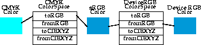
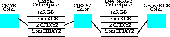

| CONTENTS | PREV | NEXT | Java 2D API |
A ColorModel is used to interpret pixel data in an image. This includes mapping components in the bands of an image to components of a particular color space. It might also involve extracting pixel components from packed pixel data, retrieving multiple components from a single band using masks, and converting pixel data through a lookup table.To determine the color value of a particular pixel in an image, you need to know how color information is encoded in each pixel. The ColorModel associated with an image encapsulates the data and methods necessary for translating a pixel value t o and from its constituent color components.
The Java 2DTM API provides two color models in addition to the DirectColorModel and IndexColorModel defined in the JDK 1.1 software release:
- ComponentColorModel can handle an arbitrary ColorSpace and an array of color components to match the ColorSpace. This model can be used to represent most color models on most types of GraphicsDevices.
- PackedColorModel is a base class for models that represent pixel values that have their color components embedded directly in the bits of an integer pixel. A PackedColorModel stores the packing information that describes how color an d alpha components are extracted from the channel.The DirectColorModel in the JDK 1.1 software release is a PackedColorModel.
A ColorSpace object represents a system for measuring colors, typically using three separate numeric values. For example, RGB and CMYK are color spaces. A ColorSpace object serves as a colorspace tag that identifies the specific colo r space of a Color object or, through a ColorModel object, of an Image, BufferedImage, or GraphicsConfiguration. ColorSpace provides methods that transform Colors in a specific c olor space to and from sRGB and to and from a well-defined CIEXYZ color space.All ColorSpace objects must be able to map a color from the represented color space into sRGB and transform an sRGB color into the represented color space. Since every Color contains a ColorSpace obje ct, set explicitly or by default, every Color can also be converted to sRGB. Every GraphicsConfiguration is associated with a ColorSpace object that in turn has an associated ColorSpace. A color speci fied in any color space can be displayed by any device by mapping it through sRGB as an intermediate color space.
The methods used for this process are toRGB and fromRGB:
Though mapping through sRGB always works, it's not always the best solution. For one thing, sRGB cannot represent every color in the full gamut of CIEXYZ colors. If a color is specified in some space that has a different g amut (spectrum of representable colors) than sRGB, then using sRGB as an intermediate space results in a loss of information. To address this problem, the ColorSpace class can map colors to and from another color space, th e "conversion space" CIEXYZ.The methods toCIEXYZ and fromCIEXYZ map color values from the represented color space to the conversion space. These methods support conversions between any two color spaces at a reasonably high degree of accuracy, one Color at a time. However, it is expected that Java 2D API implementations will support high-performance conversion based on underlying platform color-management systems, operating on entire images. (See ColorConvertOp in "Imaging".)
Figure 6-1 and Figure 6-2 illustrate the process of translating a color specified in a CMYK color space for display on an RGB color monitor. Figure 6-1 shows a mapping through sRGB. As this figure illustrates, the translation of the CMYK color to an RGB color is not exact because of a gamut mismatch. 1

Figure 6-2 shows the same process using CIEXYZ as the conversion space. When CIEXYZ is used, the color is passed through accurately.
ColorSpace is actually an abstract class. The Java 2D API provides one implementation, ICC_ColorSpace, which is based on ICC Profile data as represented by the ICC_Profile class. You can define your own subclasses to repre sent arbitrary color spaces, as long as the methods discussed above are implemented. However, most developers can simply use the default sRGB ColorSpace or color spaces that are represented by commonly available ICC Profiles, such as profiles for monitors and printers, or profiles embedded in image data."ColorSpace" describes how ColorSpace objects represent a color space and how colors in the represented space can be mapped to and from a conversion space. Color management systems are often used to handle the mapping between color spaces. A typical color management system (CMS) manages ICC profiles, which are similar to ColorSpace objects; ICC profiles describe an input space and a connection space, and define how to map between them. Color management systems are very good at figuring out how to map a color tagged with one profile into the color space of another profile.
The Java 2D API defines a class called ICC_Profile that holds data for an arbitrary ICC Profile. ICC_ColorSpace is an implementation of the abstract ColorSpace class. ICC_ColorSpace objects can be constructed from ICC_Profiles. (There are some limitations--not all ICC Profiles are appropriate for defining an ICC_ColorSpace).
ICC_Profile has several subclasses that correspond to specific color space types, such as ICC_ProfileRGB and ICC_ProfileGray. Each subclass of ICC_Profile has a well-defined input space (such as an RGB space) an d a well-defined connection space (like CIEXYZ). The Java 2D API can use a platform's CMS to access color profiles for various devices such as scanners, printers, and monitors. It can also use the CMS to find the best mapping between profiles.< p>
The Color class provides a description of a color in a particular color space. An instance of Color contains the value of the color components and a ColorSpace object. Because a ColorSpace object can be specifie d in addition to the color components when a new instance of Color is created, the Color class can handle colors in any color space.The Color class has a number of methods that support a proposed standard RGB color space called sRGB (see http://www.w3.org/pub/WWW/Graphics/Color/sRGB.html). sRGB is the default color space for the Java 2D API. Several constructors defined by the Color class omit the ColorSpace parameter. These constructors assume that the color's RGB values are defined in sRGB, and use a default instance of ColorSpace to represent that space.
The Java 2D API uses sRGB as a convenience to application programmers, not as a reference color space for color conversion. Many applications are primarily concerned with RGB images and monitors, and defining a standard RGB color space makes wr iting such applications easier. The ColorSpace class defines the methods toRGB and fromRGB so that developers can easily retrieve colors in this standard space. These methods are not intended to be used for highly accurate color correction or conversions. See "ColorSpace" for more information.
To create a color in a color space other than sRGB, you use the Color constructor that takes a ColorSpace object and an array of floats that represent the color components appropriate to that space. The ColorSpace object identifies the color space.
To display a rectangle of a certain color, such as the process color cyan, you need a way to describe this color to the system. There are a number of different ways to describe a color; for example, a color could be described as a set of red, green, and b lue (RGB) components, or a set of cyan, magenta, yellow, and black (CMYK) components. These different techniques for specifying colors are called color spaces.
As you probably know, colors on a computer screen are generated by blending different amounts of red, green, and blue light. Therefore, using an RGB color space is standard for imaging on computer monitors. Similarly, four-color process printing uses cyan , magenta, yellow, and black ink to produce color on a printed page; the printed colors are specified as percentages in a CMYK color space.
Due to the prevalence of computer monitors and color printing, RGB and CMYK color spaces are both commonly used to describe colors. However, both types of color spaces have a fundamental drawback--they are device-dependent. The cyan ink used by on e printer might not exactly match the cyan ink used by another. Similarly, a color described as an RGB color might look blue on one monitor and purplish on another.
The Java 2D API refers to RGB and CMYK as color space types. A particular model of monitor with its particular phosphors defines its own RGB color space. Similarly, a particular model of printer has its own CMYK color space. Different RGB or CMYK color sp aces can be related to each other through a device-independent color space.Standards for the device-independent specification of color have been defined by the International Commission on Illumination (CIE). The most commonly used device-independent color space is the three-component XYZ color space developed by CIE. When you sp ecify a color using CIEXYZ, you are insulated from device dependencies.
Unfortunately, it's not always practical to describe colors in the CIEXYZ color space--there are valid reasons for representing colors in other color spaces. To obtain consistent results when a color is represented using a device-de pendent color space such as a particular RGB space, it is necessary to show how that RGB space relates to a device-independent space like CIEXYZ.
One way to map between color spaces is to attach information to the spaces that describes how the device-dependent space relates to the device-independent space. This additional information is called a profile. A commonly used type of color profi le is the ICC Color Profile, as defined by the International Color Consortium. For details, see the ICC Profile Format Specification, version 3.4 available at http://www.color.org.
Figure 6-3 illustrates how a solid color and a scanned image are passed to the Java 2D API, and how they are displayed by various output devices. As you can see in Figure 6-3, both the input color and the image have profiles attached.
Once the API has an accurately specified color, it must reproduce that color on an output device, such as a monitor or printer. These devices have imaging characteristics of their own that must be taken into account to make sure that they produce the corr ect results. Another profile is associated with each output device to describe how the colors need to be transformed to produce accurate results.Achieving consistent and accurate color requires that both input colors and output devices be profiled against a standard color space. For example, an input color could be mapped from its original color space into a standard device-independent space, and then mapped from that space to the output device's color space. In many respects, the transformation of colors mimics the transformation of graphical objects in an (x, y) coordinate space. In both cases, a transformation is used to specify coordinates in a "standard" space and then map those coordinates to a device-specific space for output.